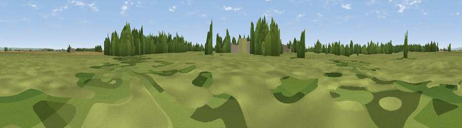

Viewpoint near Newton-on-Ouse
#40319 in England · top 89% of its area beats it · near Newton-on-OuseThe view, rendered

A 360° render of this exact spot computed from the terrain model, tree cover and land cover — summer colours, afternoon light, calibrated against photographs of famous viewpoints. Real trees, hedges and buildings will differ in detail.
The panorama
Grey silhouette: terrain skyline in each direction (720 bearings, Earth curvature and refraction included). Dashed green: skyline with trees (+15 m) and buildings (+8 m) as obstacles. Blue strip: how far the ground is visible on each bearing.
Where the view opens
Wedge length = distance to the farthest visible ground on that bearing (vegetation-aware). Rings at 10, 25 and 50 km.
What fills the view
71% grassland · 17% cropland · 11% woodland · 1% built-up
Angular shares of the visible panorama (visual magnitude), not map area. Landscape diversity 0.37 (0–1 Shannon).
Key numbers
More beautiful places nearby
The staircase of upgrades: each row has a higher view potential than everything closer. Driving times are estimates from straight-line distance, calibrated against real road routing — check an actual route before setting out.
| Place | Direction | Drive | Score |
|---|---|---|---|
| Viewpoint near Newton-on-Ouse | NNW · 0 km | ~2 min | 33.8 |
| Viewpoint near Rufforth | SSE · 7 km | ~15 min | 55.6 |
| Sand Hill | W · 11 km | ~22 min | 57.5 |
| Viewpoint near Crayke | NNE · 12 km | ~23 min | 69.2 |
| Viewpoint near Oulston | NNE · 15 km | ~27 min | 70.4 |
| Viewpoint near Brandsby | NNE · 16 km | ~28 min | 71.8 |
| Viewpoint near Wass | N · 21 km | ~35 min | 72.6 |
| Viewpoint near Ampleforth | NNE · 21 km | ~36 min | 74.9 |
54.02411, -1.20792 · source: osm viewpoint · position refined by local search. Computed location — check access rights before visiting.